Learning Objectives
After completing this lesson, you’ll be able to:
- Add readers and writers using the menu bar.
- Add writer feature types.
- Update readers and writers.
- Delete readers and writers.
- Import reader and writer feature types.
- Update reader and writer feature types.
- Delete reader and writer feature types.
Instructions
In this lesson, you will:
- Scroll down to read the text below.
- Complete the exercise by following the steps.
- Complete the Quiz toward the bottom of the page.
- Optional: Let us know if you found this lesson relevant to your role by filling out the survey at the bottom of the page.
- Click 'Next' to mark the lesson complete.
Resources
- Starting workspace
- C:\FMEData\Workspaces\UseDataIntegrationBestPractices\add-import-and-update-readers-and-writers.fmw
- Complete workspace
- C:\FMEData\Workspaces\UseDataIntegrationBestPractices\add-import-and-update-readers-and-writers-complete.fmw
- CommunityMapping GDB
- C:\FMEData\Data\CommunityMapping\CommunityMap.gdb
Reading and Writing Workflows
Many users begin a workspace by adding a single reader and writer. However, you will quickly find yourself needing to add additional readers, writers, or feature types. Additionally, FME can read/write data using:
- Multiple readers, multiple writers, or both
- FeatureReader and FeatureWriter transformers
- Integration transformers such as the DropboxConnector, Emailer, HTTPCaller, etc.
Multiple Readers and Writers
An FME workspace is not limited to any particular number of readers or writers; readers and writers can be added to a workspace at any time, any number of formats can be used, and there does not need to be an equal number of readers and writers.
For example, the Navigator window below shows that this workspace contains two readers and three writers, each with different formats.
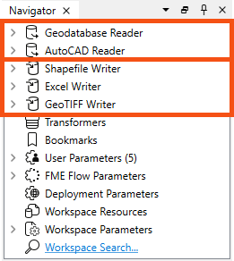

It's important to note that readers and writers don’t appear as objects on the Workbench canvas. Their feature types do, but readers and writers don't.
Instead, they are represented by entries in the Navigator window, as shown in the screenshot above.
Adding Readers and Writers
Additional readers or writers are added to a translation using the Quick Add menu. You can filter by Source or Destination to filter to readers and writers, respectively. Note that these filters also include transformers that can read or write data.
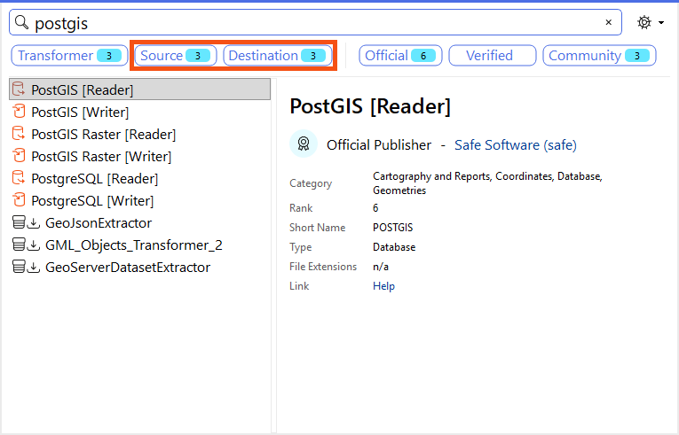
You can also add readers and writers from the Build menu:
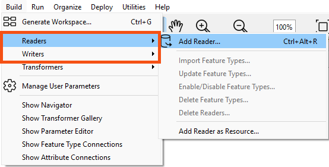
For readers, you can also click and drag a file onto the canvas:
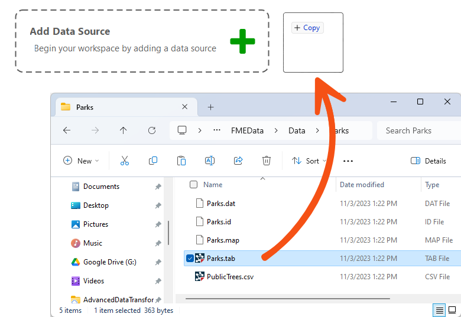
All these actions open a dialog in which you can define the parameters for the new reader or writer:
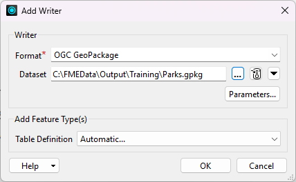
If you use Quick Add or the click-and-drag methods, the Add Reader dialog will automatically fill in the Format parameter. Note that FME will guess the Format based on the file ending when clicking and dragging, so make sure to double-check it. Some reader formats use the same file ending, e.g., GeoJSON and JSON can both use the .json file ending.
You can add as many readers and writers as you require in this way.
Deleting a Reader or Writer
If you no longer need a reader or writer, then you can delete it using the menu bar under Build:
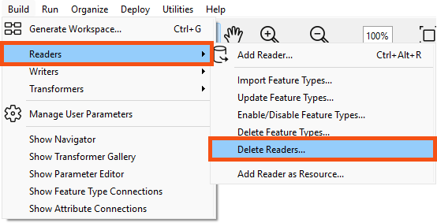
Alternatively, it's possible to right-click a reader/writer in the Navigator window and choose the Delete option.
Updating a Reader or Writer
Readers and writers can be updated so that older workspaces have the speed and functionality available in a newer version of FME. You can update a reader/writer by right-clicking the reader/writer in the Navigator window and choosing the Update option:
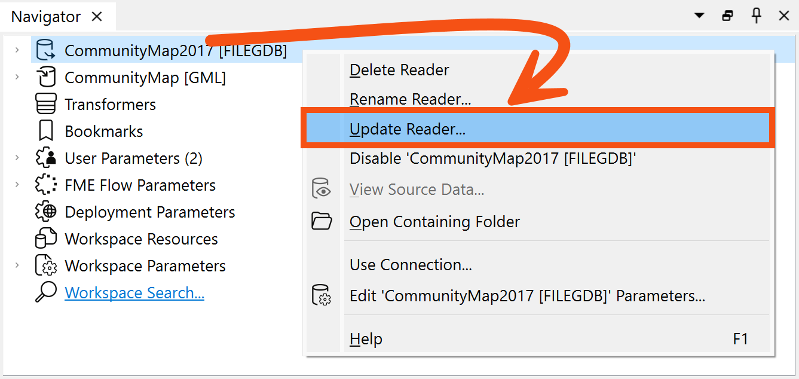
This tool provides the option to update the reader or update the list of feature types being read. This way, the workspace can be updated if the source data changes. Another way to update feature types is Reader > Update Feature Types on the menu bar.
Do you want to always read all the feature types in a dataset, even if it changes? You can merge feature types in this case.
Learn more in Define Schema Dynamically from Incoming Datasets.
Importing Feature Types
The Import Feature Types function adds feature types to an existing dataset by importing the schema from any dataset.
- From the Readers or Writers menu, select Import Feature Types. If you have more than one reader, you will be prompted to select the dataset to which you want the schema added.
- From the Import Feature Types dialog, specify the format and dataset (and parameters and coordinate system, if applicable) and click OK.
The log will display processing information and the feature types will be added to the selected dataset.
Updating Feature Types
If the structure of the data changes in your workspace (for example, the schema changes or an attribute type changes) you will usually want to keep your workspace up-to-date. This is a particularly useful feature if you are working with databases, or if you are sharing data within a workgroup.
Select Readers > Update Feature Types or Writers > Update Feature Types.
Deleting Feature Types
You can delete feature types by right-clicking them on the Canvas and selecting Delete.
If you delete the last feature type belonging to a reader or writer, FME will ask if you also wish to delete the reader or writer. We recommend doing so unless you plan to add feature types later.
Exercise

Frank is working on a workspace that reads from the community mapping geodatabase and writes to GML. He needs to make some updates before republishing it to FME Flow to power a self-serve Flow App.
Here are the changes he needs to make:
- He's been asked to add support for several new feature types that have been added to the community mapping geodatabase since he created the workspace:
- FoodVendors
- TransitStations
- Parks
- He's been asked to add support for writing the parks data to SQLite.
Let's help him out.
1) Open Starting Workspace
- Start FME Workbench (2026.1 or later).
- Open the starting workspace (C:\FMEData\Workspaces\UseDataIntegrationBestPractices\add-import-and-update-readers-and-writers.fmw).
- Examine this basic workspace.
- It reads and writes from the CommunityCentres feature class in the geodatabase.
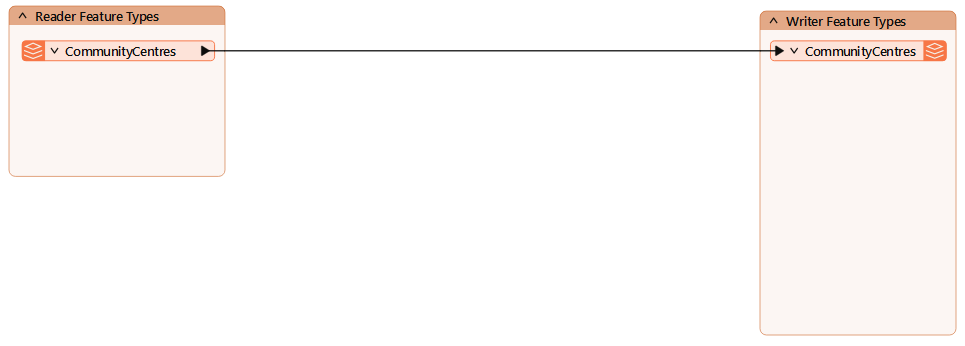
2) Import Reader Feature Types
First, let's add the new reader feature types.
It's a good idea to add reader feature types first, especially if you plan to duplicate them on one or more writers. Then you can quickly use their schema when adding the new writer feature types.
- Click Build > Readers > Import Feature Types.
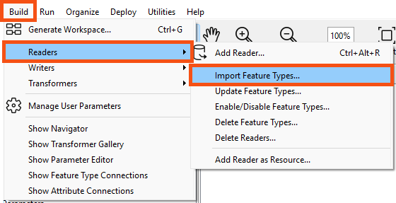
- Observe that, since there is only one reader in the workspace, FME automatically fills in the required information in the Import Reader Feature Types dialog.
- Confirm the dialog points to the CommunityMapping GDB (C:\FMEData\Data\CommunityMapping\CommunityMap.gdb).
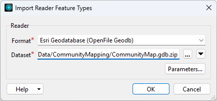
- Click OK.
- You are prompted to choose the feature types to import.
- Select the three new ones requried in this workspace: FoodVendors, Parks, and TransitStations.
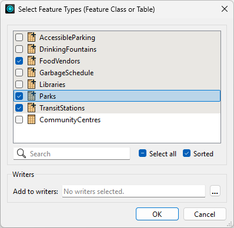
- Click OK to import the new reader feature types.
- At this stage, we could also re-import CommunityCentres if there were schema changes we wanted to bring into the workspace. But that's not required this time.
- The new feature types appear on the canvas.
- Place the new feature types under the CommunityCentres reader feature type.
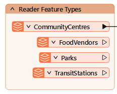
3) Add Parks SQLite Writer
Next, we want to add the SQLite writer.
- Click Build > Writers > Add Writer.
- Set the Format to SQLite and the Dataset to C:\FMEData\Output\Training\Parks.sqlite.
- Choose Copy from Reader... for the Table Definition.
- This setting will let us copy the schema from the Parks reader feature type.
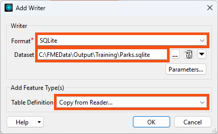
- Click OK.
- Select Parks as the reader feature type to copy.
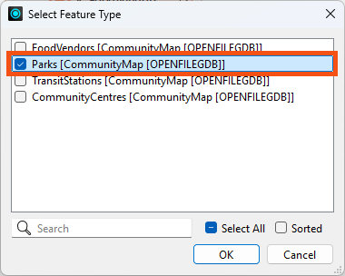
- Click OK.
- The Parks writer feature type apperas on the canvas.
- Move the Parks reader feature type to the bottom of its bookmark.
- Connect the Parks reader feature type to the Parks writer feature type.
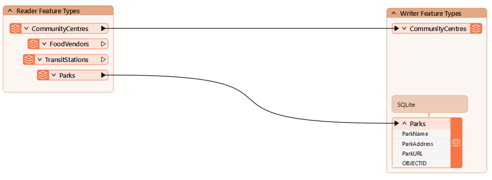
4) Add Writer Feature Types
Now we'd like to add the new feature types to the existing GML writer.
- Click Writers > Add Feature Type.
- If these layers already existed in the GML file, we could use Writers > Import Feature Types, but they don't exist yet.
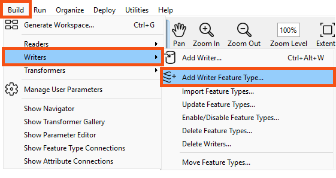
- Set the Writer to Output [GML].
- Set Feature Type Name to FoodVendors.
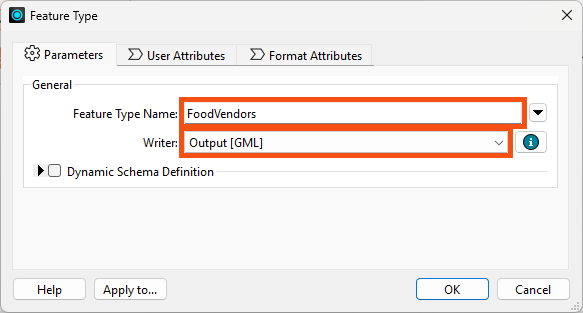
- Click OK.
- Repeat the steps to add the TransitStations and Parks writer feature types,
- Connect the new feature types to their corresponding writer feature types.
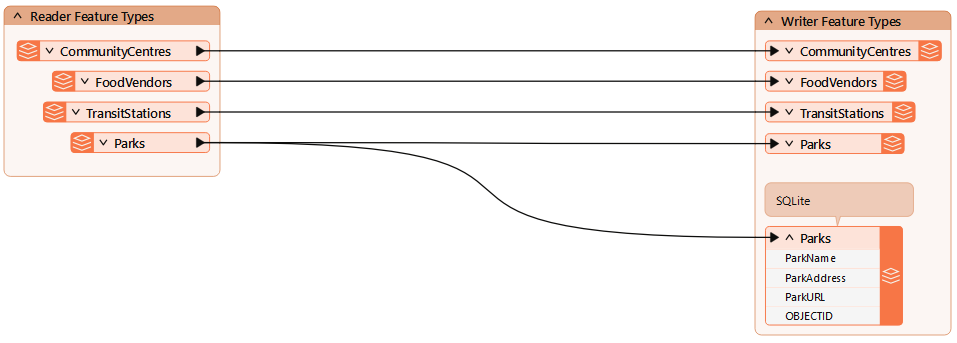
Great! The workspace has the correct feature types now.
Next, we'll have a look at configuring the reader and writer parameters.
Leave Us Feedback on This Lesson